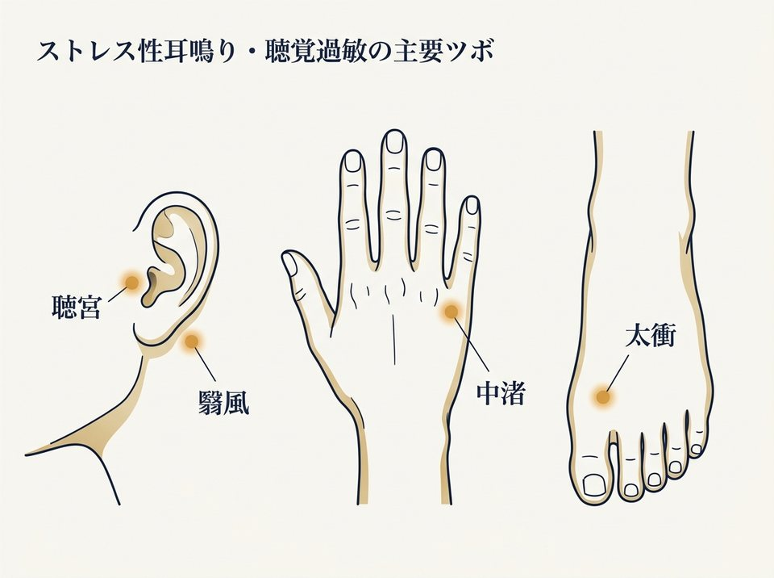

薬物依存症の鍼灸
脳の報酬系の変化により薬物使用を制御できなくなる精神疾患。専門医療機関・回復支援を絶対最優先とし、回復安定期の体調ケアを補完します。


院長YouTube解説・関連動画
公開日：２０２１年 ５月２３日
更新日：２０２１年 ６月 ９日
本日は薬物依存症について解説させていただきます。
☆本記事の内容
- •薬物依存症とは
- •薬物依存症の原因と症状
- •薬物依存症になりやすい人
- •薬物依存症の改善方法
- •薬物依存症のまとめ
- •薬物依存症は、薬物を繰り返したことによって心身に変化が起きた状態
- •薬物依存症は、報酬系などに働く薬物に依存してしまうことで起こる
- •薬物依存症は、薬物を使いたいという欲求を強く持っている状態
- •社会と関わり、本来の自分を取り戻す
- •家族も非常に大きなストレスを抱える
銀座そうぜん鍼灸院の宗前です。
このページを書いている私は、鍼灸師として１３年、担当した利用者様数８０，０００人を誇り、病気の休職者３００人を社会復帰できるまで回復させてきた実績があります。
🎥 他のYouTube切り抜き・解説を読む（あと1件）▼
薬物依存症は、薬物を繰り返したことによって心身に変化が起きた状態
薬物依存症は、精神疾患の1つで、薬物を繰り返し使ったことによって体と心に何かの変化が起きた状態のことです。依存性のある薬物を何度も使い続けていると、やめたくてもやめられない状態になります。これが薬物依存症です。
薬物が体の中に存在することが薬物依存症の問題ではなく、薬物によって心身に変化が起きていることが薬物依存症の問題なのです。
薬物依存症は薬物をやめていても、薬物を使っていた場所や薬物仲間、薬物を使っていたときに必要であったものなどに出会った時、薬物への欲求を感じてしまうことがあります。
自覚した欲求がなくても、薬物を使っていた時に感じていた心拍数の上昇や発汗、落ち着きのなさなどの症状が出ることもあります。このように薬物を使ったことによって体も心も変わってしまった状態が薬物依存症なのです。
大麻や麻薬、シンナーなどの依存性のある薬物は何度も繰り返し使っていると、ほどほどにできなくなりやめたいと思ってもやめられない状態になってしまいます。
これは、意志が弱いことや性格に問題があることで起こることではありません。依存性のある薬物を使うと、誰にでも起こる可能性があります。
薬物依存症になってしまうと、薬物を使う量や薬物を使う頻度が少しずつ増えていきます。すると、体や心に非常に悪い影響を与えてしまうのです。人間関係も壊れ、自分も家族も生活していく上で良いことはありません。
薬物依存症は、報酬系などに働く薬物に依存してしまうことで起こる
薬物依存症は、脳の神経伝達物質として報酬系などに働く薬物に依存してしまうことで起こります。
薬物依存症は、法律で禁止されている薬物への依存はもちろん、医学ではそうでない薬物も含めてあらゆる薬物へ依存することを言います。
薬物依存症では、初めて使った時の気持ちよさを忘れられなくなり、また使ってしまうようになります。また高揚感を感じたいという思いや気分の落ち込みやイライラ、不安をなくしたいという思いのために、薬物を欲するようになります。
この状態を精神依存と言います。精神的に依存して薬物を使い続けると、同じ量ではだんだんと効かなくなってきます。同じ程度の効果を感じるためにはよりたくさんの薬物が必要になります。このようにして量が増え、依存も進むのです。
アルコールや睡眠薬、ヘロインなどは、摂らなくなると非常に苦しい離脱症状が現れます。これは身体依存と言います。
やめようと考えても離脱症状の苦しさに耐えられなくなり、症状を和らげるためにまた薬物を摂取してしまうのです。このような段階で薬物依存症は進んでいきます。
当然、薬物の種類や量、摂取していた期間は人によって違います。しかし、どのように摂取していたとしても、ほぼ全ての場合同じような段階で依存が進んでいきます。
薬物依存症は、薬物を使いたいという欲求を強く持っている状態
依存性のある薬物には、法律で規制されている違法薬物の他に医療機関でもらう薬物などもあります。
違法薬物には、覚せい剤や大麻、合成麻薬、コカイン、ヘロイン、MDMAなどがあります。ハーブ、アロマオイル、バスソルト、お香、リキッドなどの名前で販売されている危険ドラッグにも依存性があります。
医療機関でもらう薬物では、睡眠薬や抗不安薬などの向精神薬などが依存性が強いです。他にも薬局などで買うことができる鎮痛薬や咳止め薬、風邪薬なども依存性のある薬物です。
薬物依存症は、薬物を使いたいという欲求を非常に強く持っている状態です。薬物をやめようとしたり、使う量を減らそうとしたりしても自分ではコントロールできなくなってしまいます。
薬物依存症の場合、薬物をやめたり使う量を減らしたりした時、離脱症状が出ます。
離脱症状は、眠れなくなる、眠りすぎる、抑うつ状態になる、不安、焦りなどの精神的な症状や、幻覚や妄想などの症状、筋肉や関節の痛み、けいれん発作や食欲の増加、脱力、嘔吐や下痢、異常な発汗などの身体的な症状まで様々です。
薬物依存症を改善するためにまず必要なことは、相談機関や自助グループや回復施設に相談することです。
薬物依存症の人は相談機関などに相談に行くまで時間がかかることも多いです。その場合は、まず家族が相談に行くと良いでしょう。
そして、薬物をきちんとやめられるように薬物を使わなくても生活をすることを続けることが必要です。相談機関などのサポートを受けながら薬物を使わずに生活していき、薬物のない生活を続けることができるように取り組みます。
さらに、社会と関わることも大切です。薬物依存症になると、社会との関わりがなくなっていきます。家族関係が悪くなることも多いです。家族や周りの人との人間関係を作りながら、社会と関わり、本来の自分を取り戻しましょう。
薬物依存症の多くは、周りの人も巻き込まれ一緒に苦しむことになります。特に、家族には大きな影響があり、家族も非常に大きなストレスを抱えることになります。
困った時は、家族が相談機関などに相談に行きましょう。家族の間だけで悩まず、相談することで、悩みを相談することもでき改善にもつながります。
１番大切なことは、家族が自分自身の健康や生活を大切にすることです。家族が健康できちんと生活を送れていることは本人の改善にもつながります。まず自分を大切に生活を送りましょう。
家族ができることは、相談機関などに相談に行き、薬物依存症についての正しい知識や対応方法を学び、常に一貫した態度をとることです。
危険を感じた時はその場から離れるようにしましょう。薬物依存症は、暴力的な行動をしてしまう人も多いです。危ない時には自分の身を守りましょう。
薬物依存症は、社会や周りの人との関わりがなくなっていきます。本人の回復を信じて、関係を良いものするためにできることをしていくことも必要です。日常のコミュニケーションの中で褒めたり話したりしていきましょう。
コミュニケーションの取り方や接し方で悩んだりしたときは、相談機関に相談することをおすすめいたします。
▼ 詳しく知りたい項目だけタップして開けます（全項目の医学解説を収録）
01. 原因とメカニズム
なぜ症状が起きるのか・鍼灸の作用機序を読む
▼
01. 原因とメカニズム
なぜ症状が起きるのか・鍼灸の作用機序を読む
薬物依存症は、違法薬物だけでなく睡眠薬・抗不安薬などの処方薬や市販の鎮痛薬・咳止め薬の反復使用によって脳の報酬系に変化が生じ、強い渇望と使用制御の困難をきたす精神疾患です。中断時には不眠・不安・幻覚・けいれん・嘔吐・発汗などの離脱症状が現れるため、依存症専門医療機関での安全な離脱管理と、相談機関・自助グループ・回復施設との連携が絶対不可欠です。
なぜ鍼灸で改善へ向かうのか？（作用機序の図解）
薬物依存症に対する鍼灸は、体性-自律神経反射による交感・副交感神経の切替機序を通じて、お体本来の回復力を引き出します。
首肩・みぞおち・手足の過緊張ポイントへ、交感神経を刺激しすぎない優しい刺激を行います。
体性-自律神経反射を通じて脳幹の迷走神経核へ働きかけ、心拍変動（HF/SDNN）を整えます。
過剰なコルチゾール分泌や過覚醒状態を落ち着かせ、深い呼吸と入眠スイッチを引き出します。
「活動（昼）」と「休息（夜）」のメリハリが戻り、動悸・不眠・倦怠感の波が穏やかになります。
02. よくあるお悩み
このような症状はありませんか？（4項目）
▼
02. よくあるお悩み
このような症状はありませんか？（4項目）
- ✓処方薬・市販薬・違法薬物などをやめたくても自分で制御できない
- ✓減量や中断時に不眠・強い不安・発汗・震えなどの離脱症状が出る
- ✓孤立や家族関係の悪化など社会生活に大きな支障が生じている
- ✓専門治療や断薬の継続に伴い強いストレスや不眠が続いている
03. 当院の施術アプローチ
施術の進め方・改善のポイントを見る
▼
03. 当院の施術アプローチ
施術の進め方・改善のポイントを見る
04. ツボ詳細・セルフケア一覧
不眠・うつ・不安・自律神経失調の全身ツボ図解（6穴）
▼
04. ツボ詳細・セルフケア一覧
不眠・うつ・不安・自律神経失調の全身ツボ図解（6穴）
実際の施術ではお一人おひとりの体質・症状に合わせて選穴しますが、不眠症・抑うつ・不安障害・パニック・自律神経失調の睡眠・心身ケアの臨床でよく用いられる代表的なツボの目安です。
| ツボ名 | 位置の目安 | 主な狙い | セルフケアの注意点 |
|---|---|---|---|
| 百会（ひゃくえ） | 頭頂部の中央 | 脳の過覚醒・考えすぎによる緊張の鎮静 | 就寝前に指の腹で5秒ほど優しく押して深呼吸します。 |
| 印堂（いんどう） | 左右の眉間の真ん中 | 入眠スイッチの切り替え・不安感や焦燥感の緩和 | 目を閉じて軽く触れるだけでも副交感神経が優位になりやすくなります。 |
| 安眠（あんみん） | 耳の後ろの出っ張った骨の斜め下のくぼみ | 入眠困難・中途覚醒・首の緊張緩和 | 枕に当たる首の後ろを温めるとより緩みます。 |
| 内関（ないかん） | 手首の横ジワから指3本分肘寄りの中央 | 胸のざわざわ・動悸・予期不安の鎮静 | 不安を感じたときのセルフケアとしても心強いツボです。 |
| 神門（しんもん） | 手首の横ジワの小指側のくぼみ | 不眠・精神疲労・ストレス応答の安定化 | 心療内科・精神科のお薬は必ず主治医の指示通り継続してください。 |
| 三陰交（さんいんこう） | 内くるぶしの上から指4本分上 | 足元の冷え改善と睡眠リズムの定着 | お風呂上がりの優しい指圧やレッグウォーマーが有効です。 |
05. 医学的根拠・国際査読論文（PubMed / Cochrane）
科学的エビデンス・出典リンク一覧（4件）
▼
05. 医学的根拠・国際査読論文（PubMed / Cochrane）
科学的エビデンス・出典リンク一覧（4件）
国際的な医学データベース（PubMed・Cochrane等）で報告されている不眠症・抑うつ・不安障害・パニック・自律神経失調の睡眠・心身ケア領域の代表的な査読済み鍼灸研究をまとめています（標準治療との併用や研究上の限界を含めて正確に掲載）。
| 年・研究デザイン | 対象・規模 | 主な結果 | 限界・出典 |
|---|---|---|---|
| 2025年 メタ解析 | 自律神経不調を伴う疾患 10 RCTs（n=744） | 全体適応力指標SDNNが有意改善（MD 13.59, p=0.0091）、重篤な有害事象ゼロ。 | LF・HF・LF/HFは有意差なし、異質性高。 Front Neurosci (PMID: 41230507) |
| 2023年 メタ解析 | 手技鍼 vs シャム鍼 9 RCTs | 実鍼群でのみ施術前後の副交感神経指標HFおよびLF/HF比が有意変化。 | 一次研究の質・異質性にばらつきあり。 Complement Ther Med (PMID: 36494036) |
| 2024年 RCT | 食後愁訴症候群（PDS）解析51名 | 症状反応率（p=0.001）、迷走神経活性HF上昇（p≤0.001）、LF/HF低下（p≤0.001）。 | 単施設・小規模（脳腸相関の根拠）。 Chin Med (PMID: 39568071) |
| 2022年 国内RCT | 更年期女性 48名（日本式鍼7穴×4週） | 鍼群の79%で心拍数が5%以上低下（P<0.01）、鍼中のHF上昇・起立時LF/HF低下を確認。 | 更年期女性限定・4週間の短期評価。 Med Acupunct (PMID: 36311889) |
参考文献・出典
- 2025年 メタ解析（自律神経不調を伴う疾患 10 RCTs（n=744））— Front Neurosci (PMID: 41230507)
- 2023年 メタ解析（手技鍼 vs シャム鍼 9 RCTs）— Complement Ther Med (PMID: 36494036)
- 2024年 RCT（食後愁訴症候群（PDS）解析51名）— Chin Med (PMID: 39568071)
- 2022年 国内RCT（更年期女性 48名（日本式鍼7穴×4週））— Med Acupunct (PMID: 36311889)
06. よくある質問（FAQ）
よくあるご質問を見る（2件）
▼
06. よくある質問（FAQ）
よくあるご質問を見る（2件）
Q. 薬をやめ始めたばかりの離脱症状がつらい時期に受けられますか？
離脱症状にはけいれんや幻覚、循環器変動など危険を伴うものがあるため、離脱期は必ず専門医療機関での管理を最優先してください。鍼灸の対象外です。
Q. 家族が悩んでいる場合はまずどこへ相談すべきですか？
ご本人の受診が難しい場合でも、まずは地域の精神保健福祉センターや依存症専門相談機関・家族会へご相談いただくことが大切です。
あわせて読まれる関連疾患（自律神経のお悩み）
入眠困難や中途覚醒などが続き日中の不調を招く状態です。自律神経の過緊張を鎮め、心身が休息しやすい環境を補完的に整えます。
脳の報酬系の変化により飲酒を制御できなくなる精神疾患。専門医での断酒治療・離脱管理を最優先とし、安定期の睡眠と自律神経を補完します。
脳の報酬系の偏りによりギャンブル行動を制御できなくなる依存症。専門医療機関・自助グループでの支援を最優先に、心身の過緊張を補完ケアします。
昼食時に一人になることへの強い不安や対人プレッシャーで心身が緊張する状態。必要に応じた相談と並行し、膻中等で自律神経を整えます。
身近な人との情緒的な共感の乏しさと周囲の無理解から心身が疲弊する状態。心理支援と並行し、百会・期門等で自律神経と倦怠感を整えます。
抗うつ薬等の影響で脳内セロトニンが過剰になり発症する急性薬物障害。救急医療が絶対最優先で急性期は鍼灸対象外です。
CLINICAL RECOVERY CASES
✨ 実際の臨床改善事例・回復経過を見る
銀座本院をはじめ各院での実際の改善事例を症状別に絞り込んでご確認いただけます。
おひとりで悩まず、まずはご相談ください
銀座本院・川口・大宮・横浜・博多・田無の各院でご予約を承っております。